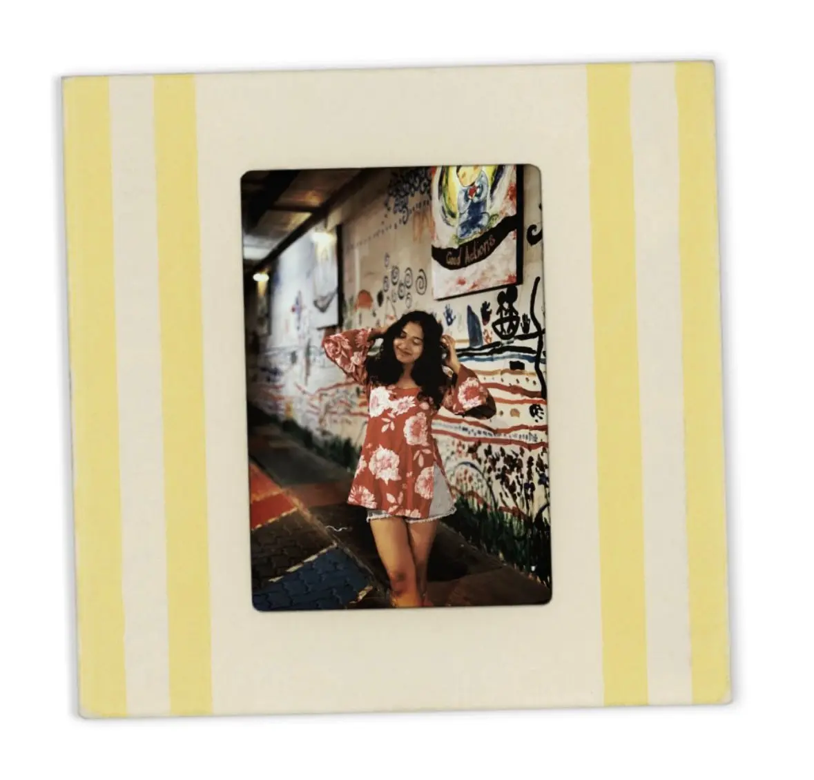

Nature
An appreciation for greenery creates a stronger reason to protect the environments we enjoy.
About / The person behind the project
I created this website to combine front-end development, visual communication and a subject I genuinely care about: making sustainable living feel understandable and achievable.

My sustainability journey
Growing up, I did not pay much attention to the amount of waste produced in daily life. Like many people, I sometimes bought unnecessary items and disposed of things without considering where they would eventually go.
As I learned more about environmental challenges, I began reflecting on my own habits and the role individuals can play in creating a more sustainable future. Curiosity became awareness, and awareness gradually became action.
I am especially interested in practical solutions—changes that are simple enough to fit into real life but meaningful enough to create impact when many people practise them consistently.
What shaped the project
Being surrounded by greenery and peaceful outdoor spaces reminds me why environmental protection should feel personal, not abstract.
An appreciation for greenery creates a stronger reason to protect the environments we enjoy.
Mindful consumption asks us to consider the consequences of what we buy, use and discard.
Thoughtful design can make sustainability information clearer, more attractive and easier to act on.
Project context / Singapore Polytechnic
The project allowed me to practise semantic HTML, responsive CSS, accessibility, visual hierarchy and user-focused content while expressing my interest in sustainability and environmental awareness.
My vision
A future where sustainable habits become part of everyday life—and where communities value resources, reduce waste and protect the natural world together.
By sharing my journey through this website, I hope to encourage others to begin with one realistic change and keep building from there.
Explore my actions ↗